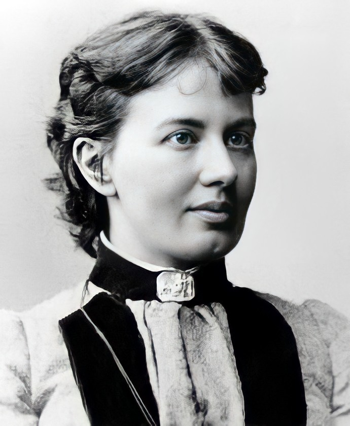

Софья Ковалевская
 Если в странах Европы Софью Ковалевскую считали величайшим математиком, то на родине её гениальность признали только после смерти. Ковалевская стала первой женщиной в мире, которая получила должность профессора, а также первой женщиной-учёным в России, удостоившимся чести стать членом-корреспондентом Петербургской АН. Жизнь Софьи напоминала бесконечную борьбу: за право на образование, за возможность заниматься математикой и преподавать любимый предмет, за выбор научной карьеры вместо того, чтобы стать лишь хранительницей домашнего очага.
Детство
Выдающаяся женщина-математик родилась в городе Москва 15 января 1850 года в зажиточной семье генерал-лейтенанта Василия Корвина-Круковского и Елизаветы Шуберт. Кроме Софьи родители воспитывали ещё двух детей: старшего брата Фёдора и сестру Анну. Впоследствии любимый сын растратил состояние отца и восторженно приветствовал большевиков, в то время как Анна стала революционеркой и участвовала в Парижской коммуне.
Отец и мать хотели иметь ещё одного сына, поэтому появление на свет Софьи не вызвало радости. Девочка ощущала нелюбовь родителей с ранних лет и пыталась заслужить их похвалу. Чувствуя себя отвергнутой родными людьми, Софья часто выбирала одиночество, за что получила прозвище «дикарки».
Девочка выросла в родительском поместье Полибино, которое располагалось в Витебской губернии. Сначала обеими сёстрами занималась няня, а потом их обучение было доверено домашнему учителю Иосифу Малевичу. За восемь лет Софья изучила все предметы, которые преподавались на то время в мужских гимназиях. Учитель восторгался способностями девушки, старательностью, идеальной подготовкой к каждому уроку и быстрым усвоением нового материала. При этом способность Софьи к наукам была наследственной, ведь её прадед Фёдор Иванович Шуберт был знаменитым астрономом, а дед Фёдор Фёдорович Шуберт, вошёл в историю как талантливый математик и геодезист.
Частый гость отцовского дома, профессор Николай Тыртов, заметил математические способности девочки. Учёный даже прозвал Софью «новым Паскалем» и предлагал отцу дать дочери качественное математическое образование. Но старый генерал был убеждён, что у женщины только одна дорога в жизни – выйти замуж. Отец не захотел отправить дочерей за границу для обучения, а в России университеты были закрыты для женщин.
Математика
В 1866 году Софья переехала в Петербург и начала учиться у Александра Страннолюбского, знаменитого на то время педагога. Через два года девушка получила право слушать лекции Ивана Сеченова, а также изучать анатомию в Военно-медицинской академии.
Чтобы избавиться от постоянных ограничений родителей, Софья решается на фиктивный брак с Владимиром Ковалевским, после чего уезжает за границу учиться в Гейдельбергском университете. В это время девушка усиленно штудирует математику, слушая лекции Германа Гельмгольца, Густава Кирхгофа и др. Муж восторгался способностями жены и в одном из своих писем сообщал, что его 18-летняя спутница жизни прекрасно образована, знает многие языки и усиленно занимается математикой.
В 1870 году семья Ковалевских решает поселиться в Берлине, где Софья хотела учиться в местном университете и посещать занятия Карла Вейерштрасса. Но оказалось, что в этом учебном заведении женщин не принимают. Ковалевской оставалось только просить ученого о частных уроках. Чтобы избавиться от назойливой девушки, Вейерштрасс решил задать Софье ряд труднейших задач. Но спустя некоторое время Ковалевская вернулась к учёному с готовыми решениями.
Вейерштрасс был поражён точностью и логичностью выводов Ковалевской и стал для неё постоянным учителем. Софья доверяла мнению наставника и консультировалась с ним по поводу каждой своей работы. Но профессор только рецензировал труды женщины-математика, а все идеи принадлежали Ковалевской.
В 1874 году Ковалевская стала доктором философии после защиты в Геттингенском университете диссертационного исследования «К теории дифференциальных уравнений». Это был величайший успех, под впечатлением от которого молодая семья решила возвратиться в Россию.
Софья мечтала преподавать в Петербургском университете, но российское научное общество было не готово открыть дверь перед талантливой женщиной. В родной стране выдающемуся математику могли предложить только должность учительницы в женской гимназии.
Разочарование вынудило Софью уйти из науки на шесть лет. Она пыталась реализовать себя в литературно-публицистической работе, часто выступала на съездах врачей и исследователей. В этот период Ковалевская родила дочь и на некоторое время уехала в Европу.
В 1880 году Софья вернулась в Москву, а через год стала членом местного математического общества. Женщина делала попытки сдать несложные для неё магистерские экзамены, но получила оскорбительный отказ. В итоге Ковалевская отправилась в Париж, где добивалась преподавательского места на Высших женских курсах. Тем не менее, и здесь гениального математика ожидало разочарование.
Чтобы обеспечить семью, Владимир Ковалевский бросил научную деятельность и занялся бизнесом. Он вложил в дело сбережения Софьи, но потерпел неудачу. Мужчину постоянно обманывали компаньоны, и на 1883 год семья учёных полностью лишилась средств к существованию. При этом Ковалевского обвинили в спекуляциях, и, потеряв надежду выбраться из сложного положения, мужчина покончил жизнь самоубийством. Ужасные известия потрясли Софью, которая вскоре возвратилась в Россию и восстановила доброе имя мужа.
Важные изменения в жизни Софьи Ковалевской произошли после того, как её пригласили в 1884 году преподавать в Стокгольмском университете. Устройству женщины-учёного на работу содействовал Карл Вейерштрасс и Магнус Миттаг-Леффлер. Сначала Софья читала лекции на немецком языке, а спустя год перешла на шведский. Кроме того, в Ковалевской проявился литературный талант, и она начала писать рассказы и повести.
На это время приходится большинство научных открытий Ковалевской. Женщина изучала процесс кружения тяжёлого несимметричного волчка, а также открыла третий вариант решения задачи относительно вращения твёрдого тела, если имеется неподвижная точка.
В 1888 году Парижская академия наук объявила конкурс на лучшую работу по изучению движения твердого тела, которое имеет неподвижную точку. В итоге жюри выбрало исследование, которое демонстрировало удивительную математическую эрудицию. Конкурсная работа настолько впечатлила учёных, что они увеличили премию с 3 до 5 тыс. франков. После этого жюри открыло конверт с именем математика, написавшего блестящую научную работу. Автором этого исследования оказалась Софья Ковалевская – единственная на то время женщина, преподававшая математику в должности профессора.
Открытия Ковалевской были оценены в 1889 году и Шведской академией наук, которая вручила женщине премию и профессорское звание в Стокгольмском университете (пожизненно). В том же году Российская АН избрала Софью членом-корреспондентом. Слава и любимое дело за границей не избавили Ковалевскую от тоски по родине. Женщина хотела преподавать в Петербургском университете, и такая возможность появилась в 1890 году. Софья приехала в Россию, но талантливому учёному не позволили даже участвовать в заседании академии. Это решение аргументировалось тем, что в обычаи научного собрания не входит присутствие женщин.
Смерть
Софья Ковалевская пользовалась авторитетом в престижных университетах Европы, стала признанным учёным и преподавателем, но научное общество родной страны женщину не признало. Оказавшись ненужной в России, Ковалевская решила вернуться в Стокгольм. По дороге Софья сильно простудилась и заболела воспалением лёгких. Медики оказались бессильными помочь великому математику, и 10 февраля 1891 года Ковалевская умерла в возрасте 41 года.
Сегодня достижения Софьи Ковалевской высоко ценятся мировым учёным сообществом. В её честь назван лунный кратер и астероид. Фото Софьи было изображено в 1951 году на советской почтовой марке. С 1992 года Российская АН присуждает математикам премию имени С. Ковалевской. Во многих городах постсоветского пространства в честь знаменитой женщины-учёного названы улицы. В Стокгольме (Швеция), Великих Луках (Россия) и Вильнюсе (Литва) её имя носят учебные заведения.